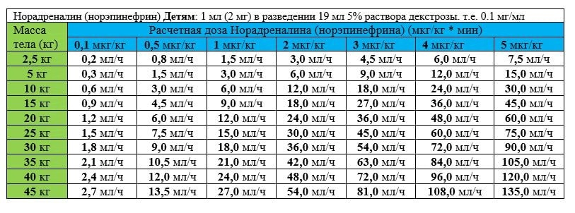

Приготовление:
Норадреналин 1 мл (2 мг) + 19 мл 5% декстрозы → 0,1 мг/мл
Расчёт (пример для 25 кг):
25 × 0,5 = 12,5 мкг/мин → 0,0125 мг/мин → 0,125 мл/мин → 7,5 мл/ч
Sol. Norepinephrini 2mg/ml-1ml + Sol. Glucosae 5%-19ml в/в через шприцевой дозатор ДШП 5-20 «Шмель» со скоростью ___ мл/ч
